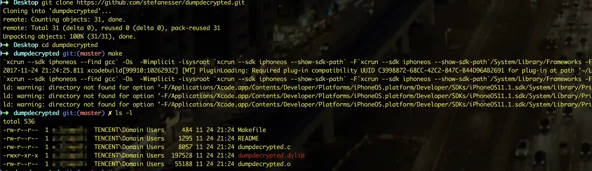
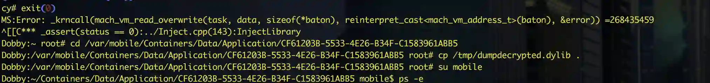
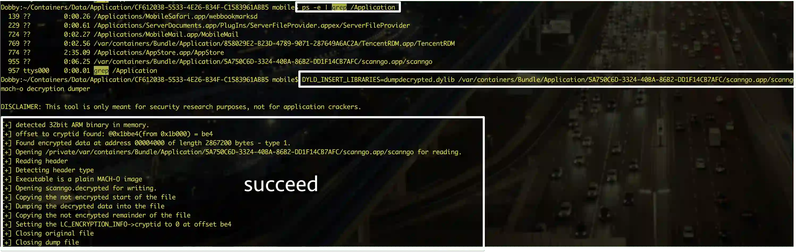
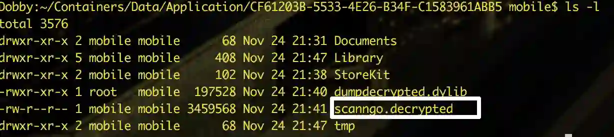
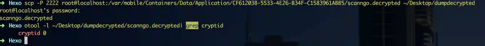

之前写过一篇 clutch砸壳 的, 但clutch似乎没有100%成功的情况, 所以还是得老司机来.
编译得到.dylib
https://github.com/stefanesser/dumpdecrypted
下载后make一下会生成一个.dylib

拷贝到设备上
iproxy 2222 22
开启一个映射后:
scp -P 2222 dumpdecrypted.dylib root@localhost:/tmp/
获取App目录
启动下目标App,cycript到进程中, 输入:
NSHomeDirectory()
拷贝.dylib到App目录
退出cycript,切换到App目录后:
拷贝.dylib 到得到的目录:
cp /tmp/dumpdecrypted.dylib .
mible用户查看进程:
su mobile #切换普通用户

开始砸壳
启动下App,然后:
ps -e | grep /Application #查看App进程,我们需要正确的二进制文件地址
DYLD_INSERT_LIBRARIES=dumpdecrypted.dylib <上面的二进制地址>

查看文件

